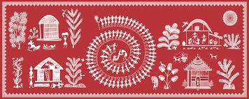
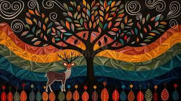

INDIAN TRADITIONAL ART-TANJORE ART.

Thanjavur painting is a classical South Indian painting style, originating from the town of Thanjavur (anglicized as
Tanjore) in Tamil Nadu. The art form draws its immediate resources and inspiration from way back about 1600 AD, a period when
the Nayakas of Thanjavur under the suzerainty of the Vijayanagara Rayas encouraged art—chiefly, classical dance and music—as
well as literature, both in Telugu and Tamil and painting of chiefly Hindu religious subjects in temples. However, it can
safely be surmised that Thanjavur painting, as we know it now, originated in the Maratha court of Thanjavur (1676-1855).
It has been recognized as a Geographical indication by the Government of India in 2007-08.
Thanjavur paintings are characterised by rich and vivid colours, simple iconic composition, glittering gold foils overlaid
on delicate but extensive gesso work and inlay of glass beads and pieces or very rarely precious and semi-precious gems. In
Thanjavur paintings one can see the influence of Deccani, Vijayanagara, Maratha and even European or Company styles of painting.
Essentially serving as devotional icons, the subjects of most paintings are Hindu gods, goddesses, and saints. Episodes from
Hindu Puranas, Sthala-puranas and other religious texts were visualised, sketched or traced and painted with the main figure or
figures placed in the central section of the picture (mostly within an architecturally delineated space such as a mantapa or
prabhavali) surrounded by several subsidiary figures, themes and subjects. There are also many instances when Jain, Sikh,
Muslim, other religious and even secular subjects were depicted in Tanjore paintings.
Thanjavur paintings are panel paintings done on wooden planks, and hence referred to as palagai padam (palagai = "wooden
plank"; padam = "picture") in local parlance. In modern times, these paintings have become souvenirs for festive occasions in
South India.
History
Thanjavur has a unique place in the history of Indian painting, in that it houses the 11th century Chola wall paintings
in the Brihadeeswarar temple (Periya koyil or Pervudaiyar koyil in Tamil) as also paintings from the Nayak period (many times
superimposed on the earlier Chola paintings) dating to the 16th century.The fall of the Vijayanagara Empire and the sack
of Hampi in the Battle of Talikota in 1565 CE resulted in the migration of painters who had been dependent on the patronage of
the empire. Some of them migrated to Thanjavur and worked under the patronage of the Thanjavur Nayakas. Subsequently, the
Maratha rulers who defeated the Thanjavur Nayakas began to nurture the Thanjavur atelier. The artists absorbed the local
influences and the individual tastes of their Maratha patrons which helped evolve the unique Thanjavur style of painting. The
Thanjavur artists in addition to decorating temples also began painting and decorating the major buildings, palaces, chatrams
and residences of the Maratha kings and nobility.

Vijayanagara Rayas
The Vijayanagara empire, founded by Harihara and Bukka, was for long a bulwark against the rapidly advancing Islamic
influence from the nearby Deccan and the farther North. While the foreign influences did gradually percolate into the Peninsular
South, the Vijayanagara empire ensured that the older Hindu artistic traditions were protected and preserved. The empire had
reached its zenith under Krishnadevaraya (1509-29). Its territory stretched across the entire South Indian peninsula, from the
Tungabhadra river in the North to Kanyakumari in the south and the Malabar coast on the Arabian sea in the west to the
Coromandel coast on the Bay of Bengal in the east at its peak. In 1521-22, Krishnadevaraya travelled to the Tamil country
(Tamilagam) visiting holy places and as was his wont, made munificent donations to temples and other religious establishments.
It can be surmised that some of this munificence was also channeled into art and artists.
Thanjavur Nayakas
The Vijayanagara Rayas administered their vast kingdom through Nayaka Governors who also administered the outlying
provinces or states under the supervision of the Raya. The third important Nayaka state in Tamil country, Thanjavur, (Senji and
Madurai being the others) had been established under the reign of Krishnadevaraya's half-brother and successor Achyutaraya
(1529-42). The Thanjavur Nayaka line commenced with Sevappa Nayaka (1532-72). Sevappa ruled for several years, ably supported
by his son Achyutappa (1564-1614), who later succeeded him. It was during Achyutappa's reign that the Vijayanagara empire fell,
leading to the exodus of numerous litterateurs, philosophers, musicians and artists who migrated to several other neighbouring
kingdoms like Mysore and Thanjavur. Achyutappa was succeeded by his son Raghunatha Nayaka who in turn was succeeded by
Vijayaraghava Nayaka. Raghunatha, who was possibly the most successful Thanjavur Nayaka ruler, was also a great patron of art
and artists and helped establish the unique school of Thanjavur artists who later evolved the Thanjavur style of paintings
under the Marathas.
Marathas
Due to internal dissensions in the Nayaka line, Ekoji otherwise called Venkoji (1676-83), half-brother of
Chatrapati Shivaji marched into Thanjavur on behalf of the Adil Shah of Bijapur under whom he was a General. He subsequently
captured Thanjavur and established the Maratha rule. Despite intermittent wars, when Thanjavur was overrun first by the Nawab
of Arcot and later by Haidar Ali, Ekoji and his successors like Tulajaji, Serfoji II (Sarabhoji in Tamil) and others remained
great patrons of the arts and artists. By the time Serfoji II succeeded to the Maratha throne in Thanjavur, the Britishers had
taken over the complete administration of the state, retaining the king in only a nominal capacity to exercise power over the
fort and a smidgen of surrounding lands. Though Serfoji II had to fight off a spirited competition from Amarasimha, his paternal
uncle, to the Maratha throne of Thanjavur, it was during his reign that Thanjavur painting flourished and reached the form
and style in which we recognise it today. Serfoji II had to traverse a difficult path throughout his reign, being constantly
challenged by Amarasimha who ran a parallel court in Thiruvidaimarudur even after his accession. However, despite the troubled
times, Serfoji's reign was a time of great innovations in Thanjavur art and many other parallel fields.
The Maratha rule came to a sad end after the death of its last ruler Shivaji II, (resembling only in name his vastly greater
ancestor) who died without a male issue, when the Britishers obliged by annexing the Thanjavur state to its dominions under the
notorious Doctrine of Lapse. After the Maratha rule waned, the mercantile Chettiar community continued to patronise the
Thanjavur artists. The Chettiars being staunch Shaivites encouraged Shaivite themes. One of their monasteries in Koviloor has
large Thanjavur paintings on the lives of the 63 Nayanmars (Saivaite saints) and the 64 miracles (Thiruvilaiyadal Puranam) of
Lord Shiva minutely labelled in Tamil.Similarly, the Bhimarajagoswami monastery in Thanjavur has a large painting of 108
Vishnu temples. The Britishers who had come into Thanjavur in the wake of the Anglo-Mysore wars also patronised Thanjavur
artists and their paintings.
Style and technique
Thanjavur paintings were made in various sizes depending upon the function, the subject and the choice of the patron. Large
paintings of deities and the Maratha rulers, their courtiers and nobility, were painted and installed to serve as architectural
accents in the Maratha palaces and buildings. To quote Dallapiccola -"The works, executed on canvas pasted on a wooden support,
were framed-a major departure from the pan-Indian tradition, in which paintings are of small size- and designed to be hung on
the walls of domestic puja rooms or in bhajan halls. The themes, as in painted albums, (made for European patrons) were usually
gods and goddesses, holy places, religious personalities and occasionally portraits. Their dazzling palette consisted generally
of vivid reds, deep greens, chalk white, turquoise blues and the lavish use of gold (foil) and inset glass beads. Sometimes
precious stones were also used in the paintings. The large format of the majority of such works and the relatively simple
composition are the hallmark of the style. This school was greatly inspired by European techniques and was the most popular in
Tamil Nadu until the early twentieth century."
Paintings in addition to being done on canvas, were also done on walls, wooden panel, glass, paper, mica and exotic media
such as ivory. Small Ivory portraits were typically worn as cameo pendants called rajaharam and were quite popular.
Thanjavur glass paintings following the techniques of Chinese reverse glass paintings were popularised during Serfoji II's
reign as a cheaper and faster craft. The paintings were done on the reverse surface of a glass sheet with strips of metal
beaten into transparent gaps to simulate the effect of jewellery and precious stones. Most of the paintings were of Hindu
deities & saints. Other courtly and secular portraits were also created.
A Thanjavur Painting was generally made on a canvas pasted over a plank of wood (Jackfruit or teak) with Arabic gum. The
canvas was then evenly coated with a paste of French chalk (gopi) or powdered limestone and a binding medium and dried. The
artist then drew or traced using a stencil, a detailed outline of the main and subsidiary subjects on the canvas. A paste, made
of limestone powder and a binding medium called sukkan or makku, was used for creating the Gesso work. Gold leaves and gems of
varied hues were inlaid in selected areas like pillars, arches, thrones, dresses, etc. Finally, colours were applied on the
sketch.
In the past, artists used natural colours like vegetable and mineral dyes, whereas the present day artists use chemical
paints. For outlines dark brown or red was usually used. Red was favoured for the background, though blue and green were also
used. Lord Vishnu, was coloured blue, and Lord Nataraja chalk white, and his consort Goddess Sivakami was green. The sky, of
course, was blue, but black was also employed on occasions. The portrayal of figures in the paintings was also typical with
almost all the figures having rounded faces with almond-shaped eyes and smooth, streamlined bodies. The composition is static
and two-dimensional with the figures placed within arches, curtains and decorative borders. The main subject is much larger
than the other subjects and occupies the centre of the painting. Seraphs or angels resembling those in European paintings and
Islamic miniatures were also shown flanking the main figure. The figures were painted with bright flat colours except for the
face where shading was shown. The shading in Thanjavur art was more to create a feeling of depth than to conform to the European
conventions of lighting and perspective.
The Government Museum, Chennai and the Thanjavur Art Gallery,Thanjavur also house fine collections of Thanjavur
paintings depicting the Maratha kings of Thanjavur and other allied subjects. Many private museums and collectors also
possess enviable collections of Thanjavur paintings.
The British and Victoria & Albert museums in England also house a large collection of Thanjavur paintings in the company and
traditional styles. The National Museum of Copenhagen also houses a fine collection of 17th century Thanjavur paintings. King
Christian IV of Denmark had received permission to build a fort at Tranquebar (Tharangambadi in Tamil) which led to the
building of the Danesborg fort as also a Danish relationship with Thanjavur which resulted in the museum collection.
Gallery

Murugan.

Peacock.

Godess Saraswati.

Godess Lakshami, Saraswati, Ganesh.

Lord Shiv with family.

Lord Vishnu with Lakshami.